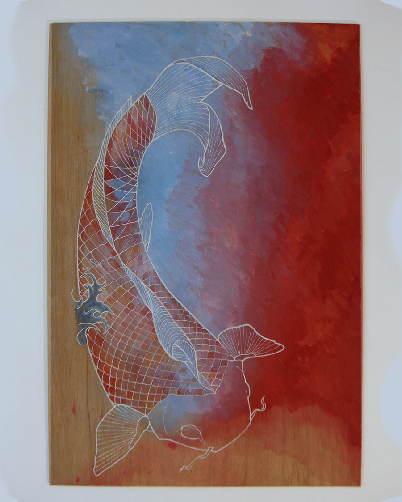

jerome arul
highschool art
sculpture


karaoke

abe, mao & sanders
paintings

kinsey kawasaki
inspired by the work of audrey kawasaki and LA street artist dave kinsey
The images were knitted with MapKnitter and uploaded by labber gonzoearth.
Here’s an old school guide to balloon mapping.
This is me being cool at Occupy Boston: